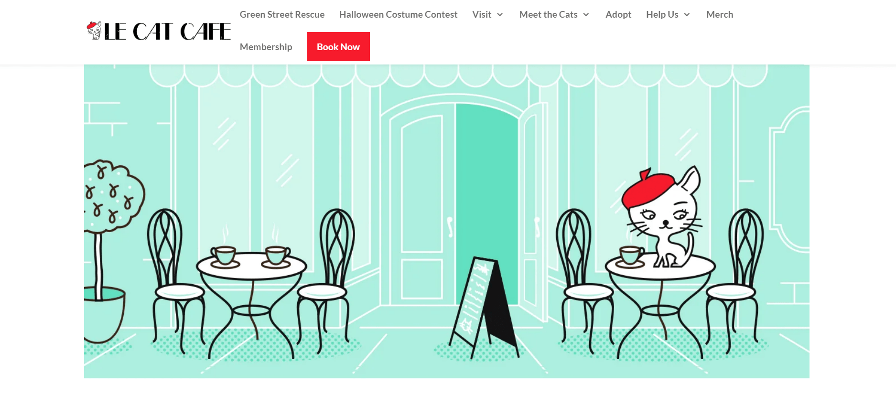
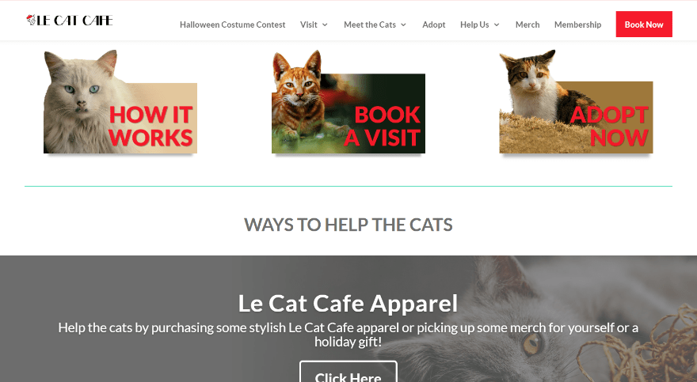
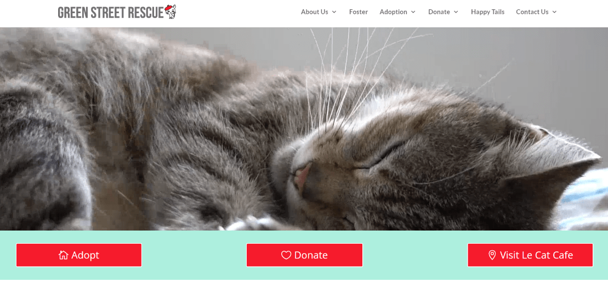
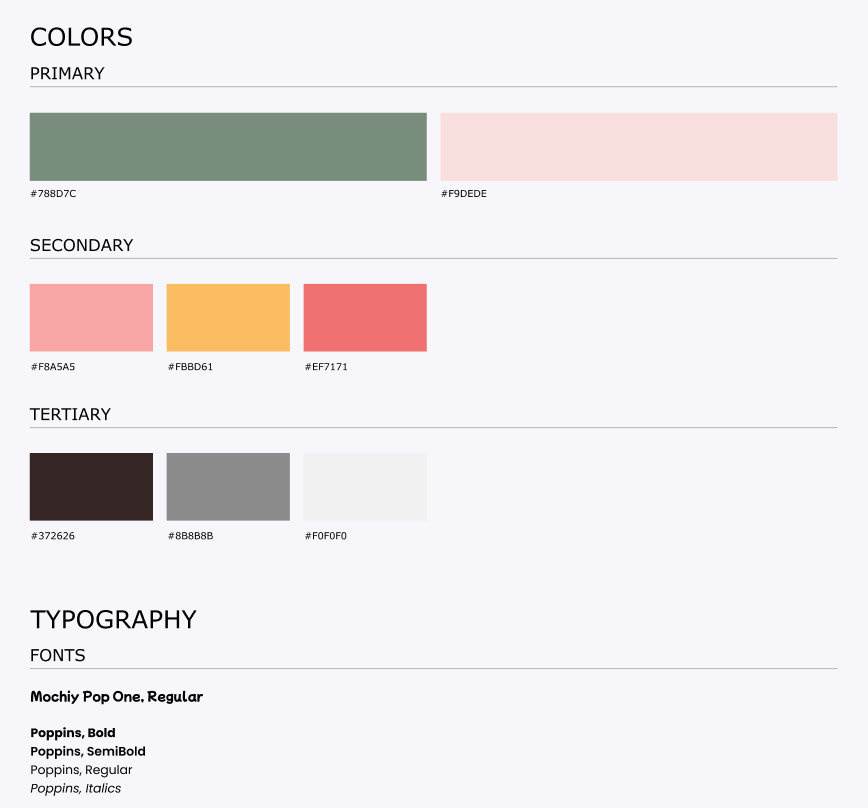

Date: Sept. 2023 - Nov. 2023
Role: UX/UI Designer / Responsive Website/App Designer / Animator
Tools: Figma
This project involved rebranding the Le Cat Café website, a cat rescue and shelter, to ensure seamless responsiveness across small, medium, and large screens. The primary objectives were to declutter content, enhance navigation for greater intuitiveness, and create a cozy ambiance through the use of soft colors and rounded elements.
Link to FigmaThe Original Website
Here are some of the original website's pages that I wanted to change:
The Home Page
For the menu or navigation system, there are 7 branches. Within those branches are more branches.
While this is a pretty standard practice, the hierachy and oragnization of the different pages felt unintuitive and slightly out of place. In my redesign, I changed the navigation bar to have 5 main branches in order to declutter and reorganize the information. The logo and book now buttons were also removed from being on the same line. They were moved to a separate line in order to create more space and less clutter. Additionally, a help or question button was added to this navigation system, as the original lacked one.
Call to Action
I decided to move the call to action from the home page to my new navigation system, under the "Help Us" section, as the call to actions organizationally makes more sense there.
Green Street Rescue Branch
The menu has a main branch that brings the users to another branching website called Green Street Rescue. The designs for these websites are very similar, so it can be confusing for users who are unaware they have entered a new website. In order to avoid confusion, I removed it from the main branch and moved it into a sub-branh.
The Redesign
Color Scheme and Fonts
The original Le Cat Café website had a sharp, elegant Parisian theme. While I aimed to preserve a subtle Parisian touch, I found the use of sharp fonts and bright, intense colors overly stimulating. These design choices, while distinct, could become visually overwhelming with prolonged viewing. Given that the café is meant to be a place of relaxation and connection with friendly cats, I chose a softer, muted, but still bright, color palette and rounded fonts to create a more inviting and calming atmosphere.
Small Screen High Fidelity UI

Medium Screen High Fidelity UI

Large Screen High Fidelity UI